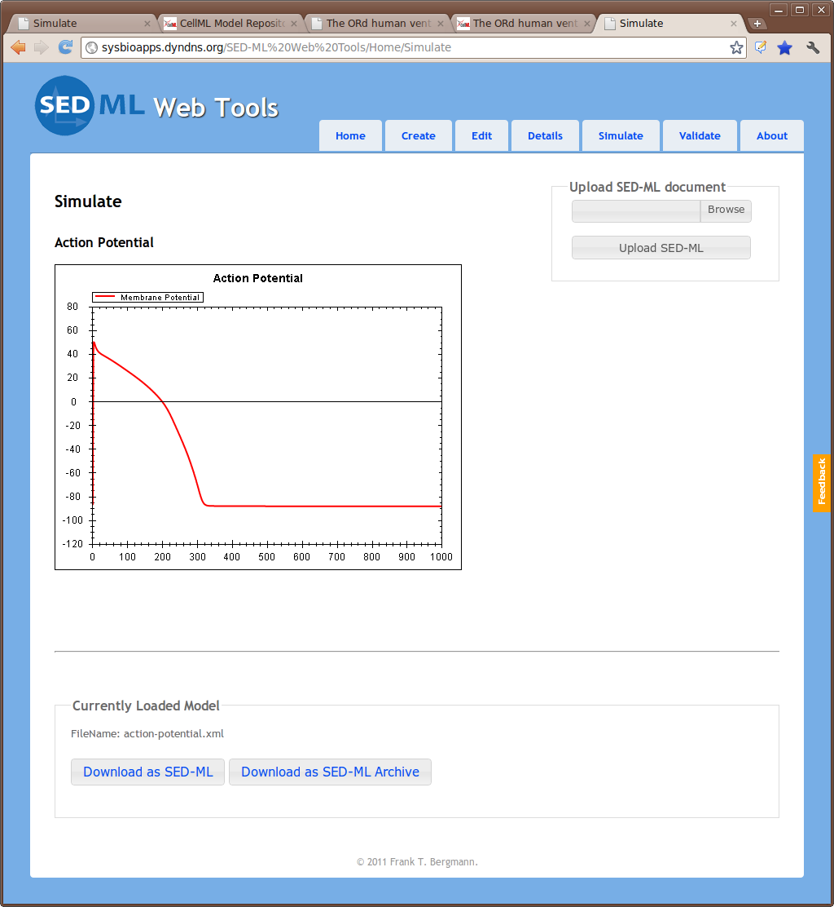

This workspace houses a CellML 1.0 encoding of the 2011 O'Hara, Virág, Varró, & Rudy 2011 human cardiac ventricular action potential model (ORd). The original article is available at: http://www.ncbi.nlm.nih.gov/pubmed/21637795. This model was encoded based on the Matlab version of the code available from: http://rudylab.wustl.edu/research/cell/.
The CellML 1.0 encoding of the ORd model was contributed by Steven Niederer. While the units in the CellML encoding are not yet perfect, it is a match for the Matlab code and matches the simulation output for a single beat perfectly. The figure below shows the output of the simulation experiment action-potential.xml encoded in SED-ML using the original version of the model from Steve. This output is generated by running the simulation experiment using the SED-ML Web Tools.
